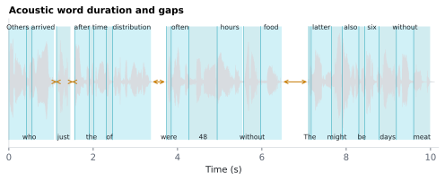

6.1.19Acoustic word duration and gap
Two derived timing columns, both in seconds, computed from Onset / End.
6.1.19.1What it is
Two derived timing columns, both in seconds, computed from
Onset / End:
| Column | Formula | Meaning |
|---|---|---|
Word_Duration |
End − Onset |
How long the word took to articulate. |
Word_Gap |
Onset[i] − End[j], j = most recent prior row with a known End |
Silence between the end of the previous aligned word and the start of this one. Punctuation tokens (which carry no acoustic interval) are skipped over, so the gap across a comma is still measured. NaN for the first aligned word of the audio. May be negative for slightly overlapping words. |
6.1.19.2See it

6.1.19.3In your output
| token | Onset seconds | End seconds | Word_Duration seconds | Word_Gap seconds |
|---|---|---|---|---|
| Others | 0 | 0.42 | 0.42 | |
| who | 0.42 | 0.55 | 0.13 | 0 |
| arrived | 0.55 | 1.07 | 0.52 | 0 |
| just | 1.13 | 1.46 | 0.33 | 0.06 |
| after | 1.56 | 1.91 | 0.35 | 0.1 |
| the | 1.91 | 2.01 | 0.1 | 0 |
| time | 2.01 | 2.31 | 0.3 | 0 |
| of | 2.31 | 2.46 | 0.15 | 0 |
| distribution | 2.46 | 3.37 | 0.91 | 0 |
| were | 3.74 | 3.85 | 0.11 | 0.37 |
| often | 3.85 | 4.27 | 0.42 | 0 |
| 48 | 4.27 | 4.94 | 0.67 | 0 |
6.1.19.4MATLAB
% Load the word-level table (one row per word)
T = readtable('word/LJ002-0321_features.csv', 'TextType', 'string');
T.Properties.VariableNames % every column in the file
head(T(:, {'token', 'Onset', 'End', 'Word_Duration', 'Word_Gap'}), 10) % this feature's columns (first rows)
% Plot
ok = ~isnan(T.Onset); % aligned words
for i = find(ok)'
patch([T.Onset(i) T.End(i) T.End(i) T.Onset(i)], [0 0 1 1], [0 .7 .82], 'FaceAlpha', .3, 'EdgeColor', 'none');
text(mean([T.Onset(i) T.End(i)]), 1.05, T.token(i), 'HorizontalAlignment', 'center');
end
xlabel('Time (s)')
6.1.19.5In the code
These columns are added downstream of
Onset / End (from MFA). The
derivation lives in sensi/extractors/timing.py — both are simple
arithmetic on the alignment output. Word_Duration is NaN-aligned
with the underlying boundaries (a word that didn't align has NaN
Onset, End, and Word_Duration).
Word_Gap measures back to the most recent row with a known
End: punctuation rows and (rarely) words MFA could not align are
skipped over rather than producing a NaN gap on the following word.
Consequence: if an unaligned word sits between two aligned ones, the
following word's gap spans the unaligned word — it is "time since the
last known word ended", not "duration of pure silence" in that rare
case. Word_Gap for the first aligned word of the audio is NaN.
Negative values arise occasionally when MFA assigns
slightly-overlapping boundaries to fast-spoken words — these are
faithful to the acoustic data, not bugs.
6.1.19.6EEG rationale
Word_Durationis a covariate for any word-locked analysis that averages across words of different lengths — longer words have more acoustic content within the analysis window and can dominate averaged responses if not controlled. It is also an index of speech rate at the word level; conversational speaking rate is itself sensitive to turn length, topic, and demographics (Yuan 2006).Word_Gapcaptures inter-word silence — including pauses, hesitations, and disfluency gaps. Pauses chunk continuous speech into phrasal units, and longer pre-word gaps elicit larger closure-positive-shifts (CPS) at the EEG level (Steinhauer 1999).
For naturalistic-EEG analyses, both columns serve as nuisance regressors when isolating higher-order linguistic effects from raw acoustic-temporal structure.
6.1.19.7Papers
- Yuan 2006 Yuan, Liberman, Cieri. Towards an integrated understanding of speaking rate in conversation. Interspeech 2006, pp. 541–544. ISCA Archive — speaking rate / word duration in conversational speech.
- Steinhauer 1999 Steinhauer, Alter, Friederici. Brain potentials indicate immediate use of prosodic cues in natural speech processing. Nature Neuroscience 2(2), 191–196. doi:10.1038/5757 — closure-positive-shift (CPS) at prosodic boundaries.